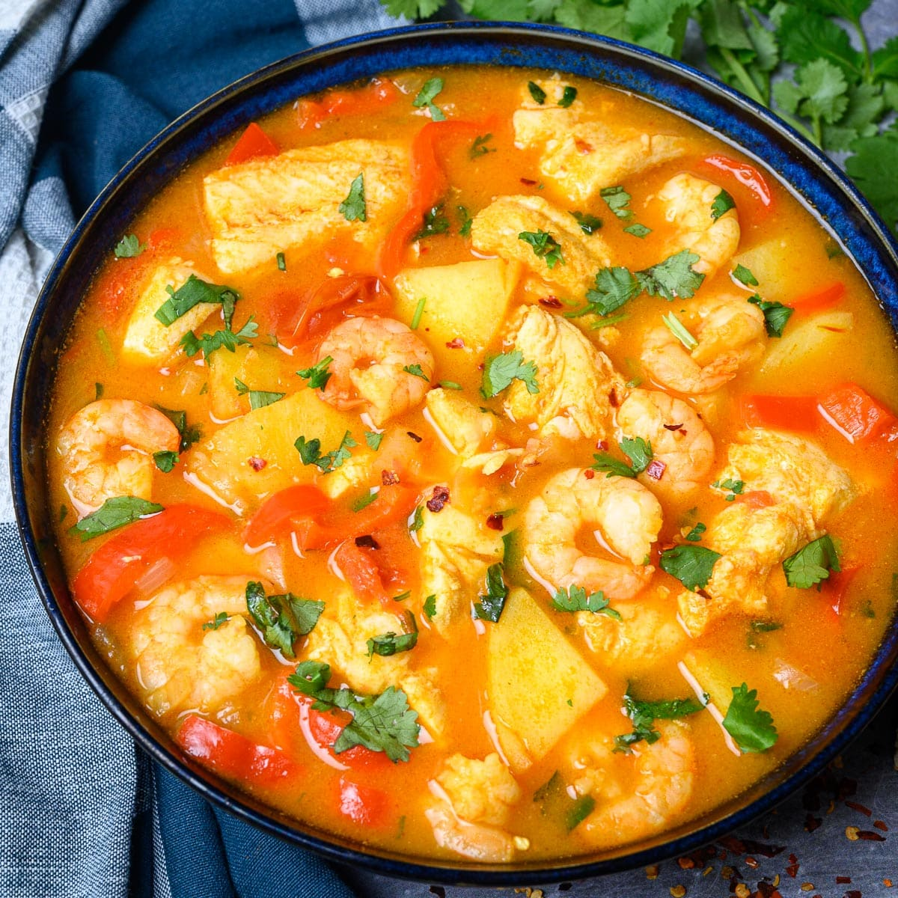
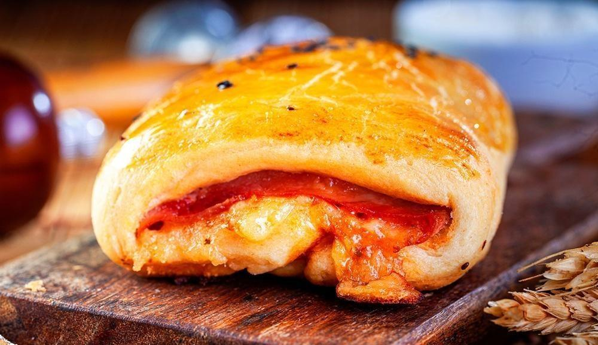
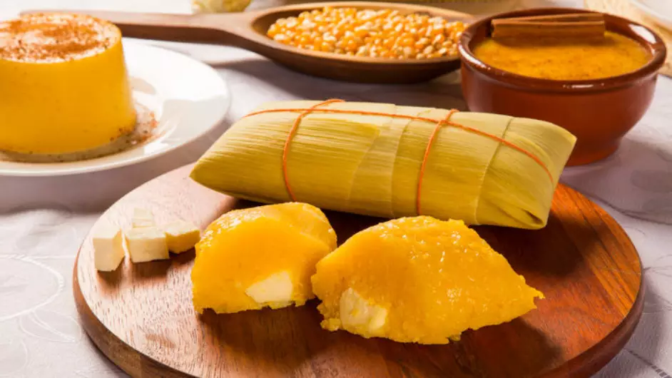
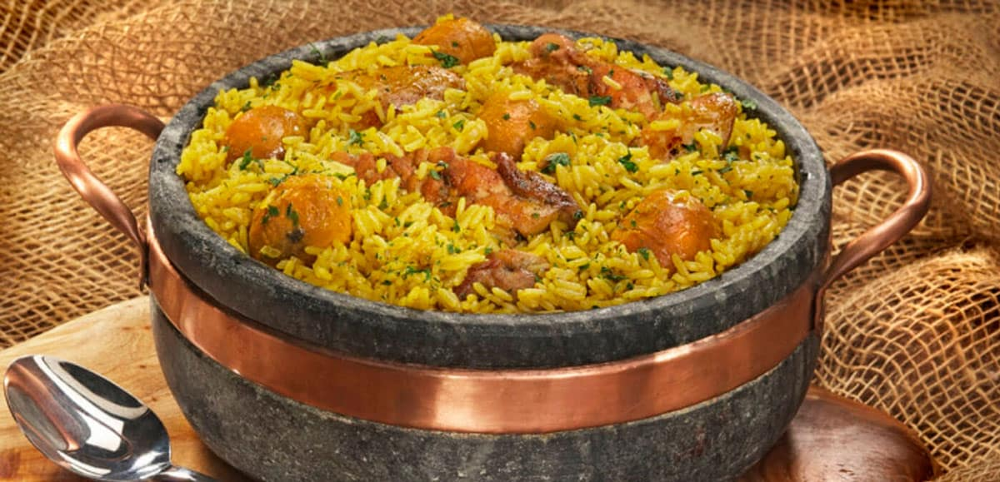
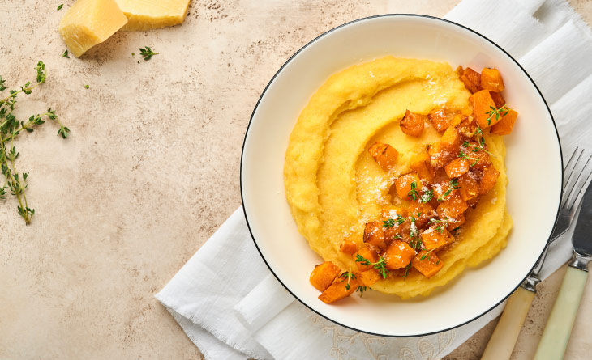
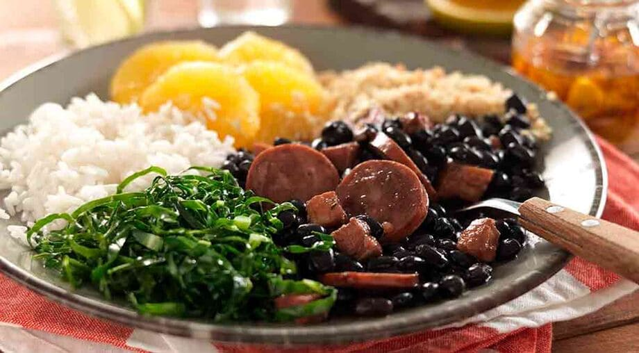

Explorando sabores, Criando memórias!
A culinária de São Paulo é um rico mosaico de influências culturais, onde tradições regionais se encontram com inovações e sabores do mundo, resultando em uma experiência gastronômica dinâmica e diversificada.

Receitas
Pratos de cada região

Região Sudeste
Bolinho de Bacalhau
O bolinho de bacalhau é apreciado na culinária brasileira. Feito com bacalhau desfiado, batata cozida e temperos como cebola, salsinha e pimenta, a mistura é moldada em pequenas porções e frita até ficar dourada. Bolinho de Bacalhau
Região Sudeste
Tutu de Feijão
É um prato tradicional da culinária brasileira, Feito à base de feijão, o tutu é preparado com o feijão cozido e amassado, misturado a ingredientes como cebola, alho, bacon e temperos. Tutu de Feijão

Região Nordeste
Caldeirada
A caldeirada é um prato típico da culinária litorânea, Trata-se de um ensopado rico, feito com uma variedade de frutos do mar, como peixes, camarões, lulas e mexilhões. Caldeirada de Frutos do Mar

Região Sudeste
Sanduíche Bauru
É um sanduíche clássico da culinária brasileira, Ele é feito com pão francês, recheado com carne assada (ou rosbife), queijo derretido, tomate, e picles se for de sua preferência. Sanduíche Bauru

Região Centro-Oeste
Pamonha
A pamonha é uma iguaria típica do Brasil, Feita a partir de milho verde ralado, ela é misturada com ingredientes que podem variar entre açúcar, sal, queijo ou até carne. Pamonha Doce
Região Central
Virada à Paulista
É um prato típico da culinária paulista, é composta por arroz, feijão, carne de porco, couve refogada e, muitas vezes, um omelete ou banana. Virada à Paulista

Região Centro-Oeste
Arroz com Pequi
O arroz com pequi é um prato tradicional do noroeste paulista, o arroz é cozido com os pedaços de pequi, que soltam seu óleo, conferindo um sabor intenso. Arroz com Pequi

Região Sudeste
Frango com Polenta
O frango com polenta é um prato saboroso. O frango é cozido e a polenta pode ser servida frita ou cremosa, podendo variar as formas de serem feitas. Polenta Recheada com Frango

Região Sudeste
Feijoada
Feita principalmente com feijão preto, a feijoada utiliza uma variedade de carnes, como a carne seca, linguiça, bacon e costela de porco. Temperos como alho, cebola e folhas de louro são fundamentais para realçar o sabor. Feijoada
Região Sudeste
Strogonoff de Frango
O strogonoff de frango é um prato icônico da culinária brasileira, muito apreciado por sua simplicidade, cremosidade e sabor. Utilizando poucos ingredientes, se torna um prato delicioso. Strogonoff de Frango
Região Sudeste
Pão de Queijo
O pão de queijo é uma iguaria brasileira, com origens que remontam à época colonial. A receita tradicional utiliza polvilho (fécula de mandioca), que dá ao pão de queijo sua textura única e leve. Pão de Queijo
Região Centro-Oeste
Frango com Quiabo
Frango com quiabo é um prato tradicional da culinária brasileira. É feito com pedaços de frango cozidos com quiabo, temperados com alho, cebola e às vezes tomate. Frango com Quiabo
Região Nordeste
Arroz Temperado
O arroz temperado é uma forma deliciosa e rápida de se preparar, acrescentando sabores e aromas que elevam o prato simples a uma refeição mais saborosa e sustentável. Os ingredientes podem variar bastante, mas os mais comuns incluem cebola, alho, pimentão, tomate e ervas como salsinha ou cebolinha. Arroz Temperado
Região Sudeste
Bolo de Cenoura
O bolo de cenoura é amado por sua textura macia e sabor adocicado. É um bolo simples de fazer e muito versátil, frequentemente servido em lanches da tarde ou em festas. A receita básica leva cenoura ralada, açúcar, ovos, óleo e farinha de trigo. Bolo de Cenoura
Região Sudeste
Bolinho de Chuva
O bolinho de chuva é um lanche tradicional da culinária brasileira, especialmente popular em dias chuvosos. Esses bolinhos são fritos e têm uma textura macia por dentro, com uma casquinha dourada e crocante por fora. Bolinho de Chuva
Região Norte
Sopa de Mandioca
A sopa apresenta uma textura cremosa, resultado do cozimento da mandioca, que se desmancha e engrossa o caldo. Seu sabor é suave e pode ser enriquecido com temperos e outros ingredientes, como carnes e legumes. Sopa de Mandioca
Projeto
Sobre o site
Mentes Brilhantes
O site foi pensado para mostrar pratos típicos de cada região de São Paulo e como cada prato tem seu sabor único e sua receita completa para se avaliar!
Sobre mim
Sou aluna do Mentes Brilhantes e tenho a intenção de me aprofundar nessa área do TI.